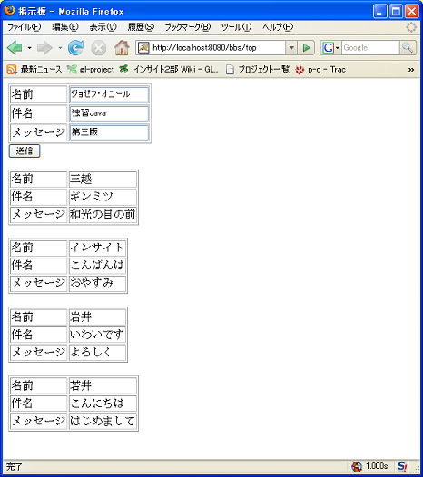
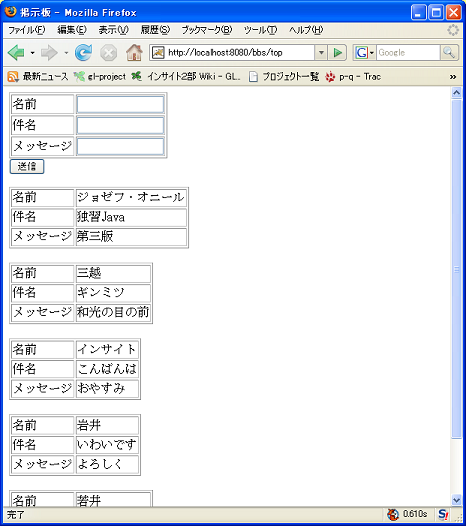

〜掲示板への道〜
5.掲示板の改良編
前回までの単純な掲示板をこれからどんどん改良していきます。
繰り返し送信できるようにする。
今のままでは、一度送信すると、一覧が表示されるだけで、入力する部分が表示されないため
別の内容を送信したい場合は、入力画面に戻らなければなりません。
これではあんまりなので、まずは、一覧画面にも入力する部分を表示するようにしましょう。
%CATALINA_HOME%\webapps\bbs\jp\co\insightech\BBSServlet.java
package jp.co.insightech;
import java.io.*;
import javax.servlet.*;
import javax.servlet.http.*;
import java.sql.*;
import java.util.Vector;
public class BBSServlet extends HttpServlet {
show メソッド以外は省略
/**
* 投稿メッセージの一覧を表示します.
*
* @param messageList 投稿メッセージの一覧
* @param response HttpServletResponse
*/
private void show(Vector messageList, HttpServletResponse response) throws IOException {
response.setContentType("text/html; charset=MS932");
PrintWriter out = response.getWriter();
out.println("<html><head><title>掲示板</title></head>");
out.println("<body>");
out.println("<form action=\"./top\" method=\"POST\">");
out.println("<table border=\"1\">");
out.println(" <tr>");
out.println(" <td>ID</td><td>");
out.println(" <td><input type=\"text\" name=\"id\"></td>");
out.println(" </tr>");
out.println(" <tr>");
out.println(" <td>名前</td>");
out.println(" <td><input type=\"text\" name=\"name\"></td>");
out.println(" </tr>");
out.println(" <tr>");
out.println(" <td>件名</td>");
out.println(" <td><input type=\"text\" name=\"subject\"></td>");
out.println(" </tr>");
out.println(" <tr>");
out.println(" <td>メッセージ</td>");
out.println(" <td><input type=\"text\" name=\"content\"></td>");
out.println(" </tr>");
out.println("</table>");
out.println("<input type=\"submit\" name=\"sendMessage\" value=\"送信\">");
out.println("</form>");
for (int i = 0; i < messageList.size(); i++) {
Message message = (Message) messageList.get(i);
out.println("<table border=1>");
out.println("<tr><td>ID</td><td>" + message.getId() + "</td></tr>");
out.println("<tr><td>名前</td><td>" + message.getName() + "</td></tr>");
out.println("<tr><td>件名</td><td>" + message.getSubject() + "</td></tr>");
out.println("<tr><td>メッセージ</td><td>" + message.getContent() + "</td></tr>");
out.println("</table><br>");
}
out.println("</body></html>");
out.close();
}
}
ただ単に out.println で表示する内容を増やしただけで、特別なことはしていません。
送信ボタンが押された場合にだけ、送信内容をＤＢに登録するようにする
一覧画面にも入力する部分が出来たので、index.html はいらなくなったはずです。
一度ブラウザを閉じて、今までの index.html ではなく、http://localhost:8080/bbs/top にいきなりアクセスしてみましょう。
あらら
画面が真っ白になってしまい、Tomcat のコンソールには次のようなエラーメッセージが表示されてしまいました。
java.lang.NumberFormatException: null
at java.lang.Integer.parseInt(Integer.java:415)
at java.lang.Integer.parseInt(Integer.java:497)
at jp.co.insightech.BBSServlet.doGet(BBSServlet.java:24)
at javax.servlet.http.HttpServlet.service(HttpServlet.java:690)
at javax.servlet.http.HttpServlet.service(HttpServlet.java:803)
at org.apache.catalina.core.ApplicationFilterChain.internalDoFilter(Appl
icationFilterChain.java:290)
at org.apache.catalina.core.ApplicationFilterChain.doFilter(ApplicationF
ilterChain.java:206)
at jp.co.insightech.CharacterEncodingFilter.doFilter(CharacterEncodingFi
lter.java:74)
at org.apache.catalina.core.ApplicationFilterChain.internalDoFilter(Appl
icationFilterChain.java:235)
at org.apache.catalina.core.ApplicationFilterChain.doFilter(ApplicationF
ilterChain.java:206)
at org.apache.catalina.core.StandardWrapperValve.invoke(StandardWrapperV
alve.java:233)
at org.apache.catalina.core.StandardContextValve.invoke(StandardContextV
alve.java:175)
at org.apache.catalina.core.StandardHostValve.invoke(StandardHostValve.j
ava:128)
at org.apache.catalina.valves.ErrorReportValve.invoke(ErrorReportValve.j
ava:102)
at org.apache.catalina.core.StandardEngineValve.invoke(StandardEngineVal
ve.java:109)
at org.apache.catalina.connector.CoyoteAdapter.service(CoyoteAdapter.jav
a:286)
at org.apache.coyote.http11.Http11Processor.process(Http11Processor.java
:844)
at org.apache.coyote.http11.Http11Protocol$Http11ConnectionHandler.proce
ss(Http11Protocol.java:583)
at org.apache.tomcat.util.net.JIoEndpoint$Worker.run(JIoEndpoint.java:44
7)
at java.lang.Thread.run(Thread.java:619)
さて、このエラーの原因はなんでしょう。
このエラーは BBSServlet.java の24行目の
message.setId(Integer.parseInt(id));
つまり登録処理の最中に発生してしまっています。
最初のアクセスでは送信ボタンを押したわけではないため、id がパラメータとして送られてきません。
従って、エラーが出ている行の変数 id は null です。にもかかわらず、null を引数にして、Integer.parseInt が実行されて
しまっているため、結果として、NumberFormatException が発生してしまているわけです。
さて、エラーの原因はわかりました。ではどうしましょう？
根本的な原因は、送信ボタンが押されていないのに、登録処理をおこなってしまったことです。
登録処理は、送信ボタンが押された場合にのみ実行するようにしましょう。
まず、送信ボタンが押されたかどうかはどのようにしたら分かるのでしょうか。
ポイントはここです。
<input type="submit" name="sendMessage" value="送信">
どこだかわかりますか？ここです。
name="sendMessage"
送信ボタンを押した場合には、"sendMessage" という名前のパラメータが送信されるのです。
裏を返せば、送信ボタンが押されていない場合には、"sendMessage" という名前のパラメータが送信されません。
では、送信されたパラメータはどのように取得するのでしょうか。
そう
request.getParameter("sendMessage");
ですね。
つまり、送信ボタンを押した場合には、request.getParameter("sendMessage") が null ではなく、
送信ボタンが押されていない場合には、request.getParameter("sendMessage") が null なのです。
 本当かどうかは自分で確認しましょう。
本当かどうかは自分で確認しましょう。
では、ここまでをまとめてみましょう。
送信ボタンが押された場合にのみ、登録処理をおこなうように改修した BBSServlet.java は次のようになります。
%CATALINA_HOME%\webapps\bbs\jp\co\insightech\BBSServlet.java
package jp.co.insightech;
import java.io.*;
import javax.servlet.*;
import javax.servlet.http.*;
import java.sql.*;
import java.util.Vector;
public class BBSServlet extends HttpServlet {
doGet 以外のメソッドは省略
public void doGet(HttpServletRequest request, HttpServletResponse response)
throws ServletException, IOException {
try {
MessageDao dao = new MessageDao();
String sendMessage = request.getParameter("sendMessage");
if (sendMessage != null) {
// (1) データベースに1件分レコードを挿入します
String id = request.getParameter("id");
String name = request.getParameter("name");
String subject = request.getParameter("subject");
String content = request.getParameter("content");
Message message = new Message();
message.setId(Integer.parseInt(id));
message.setName(name);
message.setSubject(subject);
message.setContent(content);
dao.registerMessage(message);
}
// (2) データベースにあるデータを全件取得します
Vector messageList = dao.getMessageList();
// 投稿メッセージの一覧を表示します
show(messageList, response);
} catch (Exception e) {
e.printStackTrace();
}
}
}
ID番号の扱いについて
ID番号は内部的に処理するためにあるのであり、ユーザが入力する項目ではありません。
したがって、
- ID番号は内部的処理に徹するため、画面上には表示させない。
- ID番号はユニークであるべきなので、重複しないつくりにする。
- 投稿があるたびに、ID番号を自動的に付与する。
といった改良をしましょう。
%CATALINA_HOME%\webapps\bbs\jp\co\insightech\MessageDao.java
package jp.co.insightech;
import java.sql.*;
import java.util.Vector;
public class MessageDao {
他のメソッドは省略
/**
* 投稿メッセージを登録します.
*
* @param article 登録する投稿メッセージ
* @throws Exception
*/
public void registerMessage(Message message) throws Exception {
Connection conn = null;
PreparedStatement pstmt = null;
try {
conn = this.getConnection();
pstmt = conn.prepareStatement("INSERT INTO MESSAGE_TABLE VALUES(?,?,?,?)");
pstmt.setInt(1, this.getNextId());
pstmt.setString(2, message.getName());
pstmt.setString(3, message.getSubject());
pstmt.setString(4, message.getContent());
int i = pstmt.executeUpdate();
} finally {
this.close(pstmt);
this.close(conn);
}
}
/**
* 次のIDを取得します.
*
* @return 次のID
* @throws Exception
*/
private int getNextId() throws Exception {
int nextId = 0;
Connection conn = null;
PreparedStatement pstmt = null;
ResultSet rs = null;
try {
conn = this.getConnection();
String sql = "SELECT MAX(ID) AS MAX_ID FROM MESSAGE_TABLE";
pstmt = conn.prepareStatement(sql);
rs = pstmt.executeQuery();
if(rs.next()) {
nextId = rs.getInt("MAX_ID") + 1;
}
} finally {
this.close(rs);
this.close(pstmt);
this.close(conn);
}
return nextId;
}
}
%CATALINA_HOME%\webapps\bbs\jp\co\insightech\BBSServlet.java
package jp.co.insightech;
import java.io.*;
import javax.servlet.*;
import javax.servlet.http.*;
import java.sql.*;
import java.util.Vector;
public class BBSServlet extends HttpServlet {
public void doGet(HttpServletRequest request, HttpServletResponse response)
throws ServletException, IOException {
try {
MessageDao dao = new MessageDao();
String sendMessage = request.getParameter("sendMessage");
if (sendMessage != null) {
// (1) データベースに1件分レコードを挿入します
String name = request.getParameter("name");
String subject = request.getParameter("subject");
String content = request.getParameter("content");
Message message = new Message();
message.setName(name);
message.setSubject(subject);
message.setContent(content);
dao.registerMessage(message);
}
// (2) データベースにあるデータを全件取得します
Vector messageList = dao.getMessageList();
// 投稿メッセージの一覧を表示します
show(messageList, response);
} catch (Exception e) {
e.printStackTrace();
}
}
public void doPost(HttpServletRequest request, HttpServletResponse response)
throws ServletException, IOException {
doGet(request, response);
}
/**
* 投稿メッセージの一覧を表示します.
*
* @param messageList 投稿メッセージの一覧
* @param response HttpServletResponse
*/
private void show(Vector messageList, HttpServletResponse response) throws IOException {
response.setContentType("text/html; charset=MS932");
PrintWriter out = response.getWriter();
out.println("<html><head><title>掲示板</title></head>");
out.println("<body>");
out.println("<form action=\"./top\" method=\"POST\">");
out.println("<table border=\"1\">");
out.println(" <tr>");
out.println(" <td>名前</td>");
out.println(" <td><input type=\"text\" name=\"name\"></td>");
out.println(" </tr>");
out.println(" <tr>");
out.println(" <td>件名</td>");
out.println(" <td><input type=\"text\" name=\"subject\"></td>");
out.println(" </tr>");
out.println(" <tr>");
out.println(" <td>メッセージ</td>");
out.println(" <td><input type=\"text\" name=\"content\"></td>");
out.println(" </tr>");
out.println("</table>");
out.println("<input type=\"submit\" name=\"sendMessage\" value=\"送信\">");
out.println("</form>");
for (int i = 0; i < messageList.size(); i++) {
Message message = (Message) messageList.get(i);
out.println("<table border=1>");
out.println("<tr><td>名前</td><td>" + message.getName() + "</td></tr>");
out.println("<tr><td>件名</td><td>" + message.getSubject() + "</td></tr>");
out.println("<tr><td>メッセージ</td><td>" + message.getContent() + "</td></tr>");
out.println("</table><br>");
}
out.println("</body></html>");
out.close();
}
}
実行する
TOMCAT を起動後、実行してみます。
初期画面は http://localhost:8080/bbs/top です。
まだ、文字未入力チェックはしていません。


©日本インサイトテクノロジー株式会社